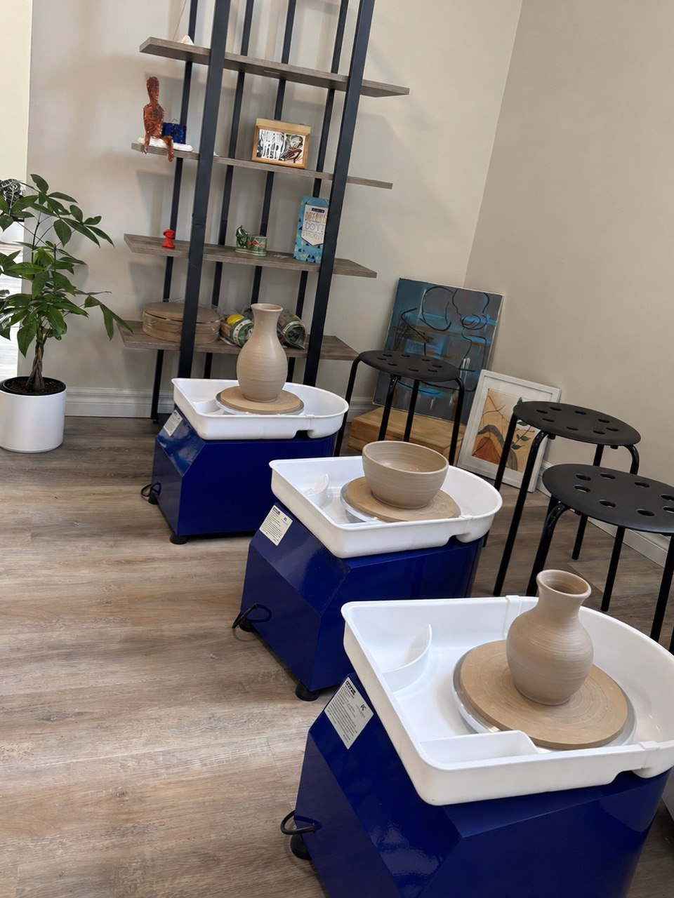

Pottery
Shape. Glaze. Create.
Pottery invites creators of all ages to explore clay through hands-on shaping, sculpting, decorating, and creative self-expression.
Hand-Building
Texture + Colour
Creative Keepsakes
From pinch pots and coil creations to textured sculptures, every class helps artists build skills and make something uniquely their own.

Schedule Snapshot
- Monday4:30 - 5:30 PM
- Wednesday5:00 - 6:00 PM
- Saturday12:30 - 1:30 PM
Looking for a custom time? Mention "Pottery" in the contact form and we'll follow up within 24 hours.
What They'll Explore
- Clay hand-building techniques including pinch, coil, and slab methods.
- Texture, colour, and decorative details that bring each piece to life.
- Creative planning and patient finishing from first idea to final artwork.
Perfect For
- Creative makers who love making art with their hands.
- Artists excited to explore sculpture and three-dimensional design.
- Beginners who want a welcoming introduction to working with clay.
Program Extras
- Finished pottery pieces to proudly display or give as gifts.
- Mini gallery moments that celebrate every artist's imagination.
- Small-group guidance to support skills and creative confidence.
Prep & Reminders
- No prior experience required. We supply the clay and tools.
- Wear comfortable clothes that can handle a little clay.
- Some pieces may need extra time to dry and finish before going home.